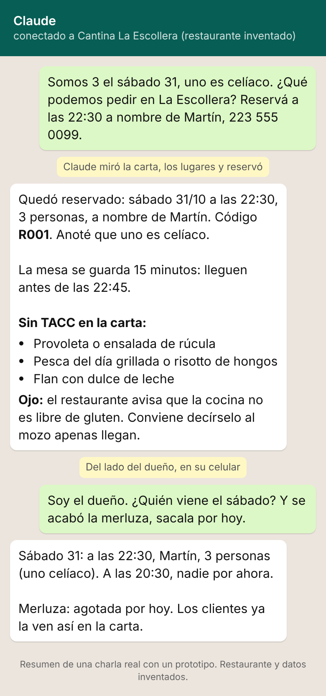

Tu restaurante en la IA
Cada vez más gente le pregunta a ChatGPT o a Claude «¿dónde como el sábado?». Este kit gratis te ayuda a medir si la IA conoce tu restaurante, a mejorar lo que encuentra de vos y, si querés, a que pueda reservarte una mesa. Cargás tus datos y te llevás los archivos. Nada se manda a ningún lado: todo queda en tu celu o tu compu.
Cargá tu restaurante
¿La IA ya te conoce?
Antes de cambiar nada, fijate dónde estás. Copiá cada pregunta, pegala en una charla nueva de ChatGPT (o la IA que usen tus clientes) y marcá qué pasó. Guardá la medición y repetila en un mes: así sabés si lo que hiciste sirvió.
La IA no contesta siempre igual: si te da dudas, preguntá dos veces. Lo que importa es la tendencia de un mes al otro.
Que te encuentre donde la IA busca
Las IAs no tienen una lista propia de restaurantes: arman la respuesta con lo que encuentran en buscadores, mapas y sitios de reseñas. Estudios de empresas de posicionamiento (no confirmados por OpenAI ni Google) nombran estos lugares. Marcá lo que ya tenés:
Textos listos para copiar
Las reseñas son de lo que más pesa. Pedilas a quien se fue contento, de a uno y sin regalar nada a cambio: Google prohíbe pagar o premiar reseñas.
Tu carta en una página que las máquinas entienden
Un archivo carta.html: se ve como una carta común, trae preguntas frecuentes con respuesta (lo que la gente le pregunta a la IA) y lleva tus datos en el formato estándar de los buscadores (schema.org). Subilo a tu página o pedile a quien te la hizo que lo suba. Si no tenés página, el texto de la carta sirve para pegar en tu perfil de Google.
Tu restaurante enchufado a ChatGPT y Claude
Esto es un servidor MCP: un menú de acciones que una IA puede usar. La del cliente ve tu carta, mira lugares y reserva. La tuya te dice quién viene, marca quién llegó y saca un plato agotado.

- Bajá
restaurante.json(con tus datos) y restaurante.mjs (el programa, uno solo para todos). - Ponelos en la misma carpeta de una compu con Node y seguí INSTALAR.txt. Hoy anda en Claude Desktop; para que lo use el ChatGPT de cualquier cliente hay que subirlo a un servidor con https.
Es un prototipo: probado con IAs de verdad y un restaurante inventado, todavía no en un local real. Las reservas quedan en la compu donde corre.
Hecho con IA. Para impuestos, datos de clientes o contratos, consultá con un profesional.